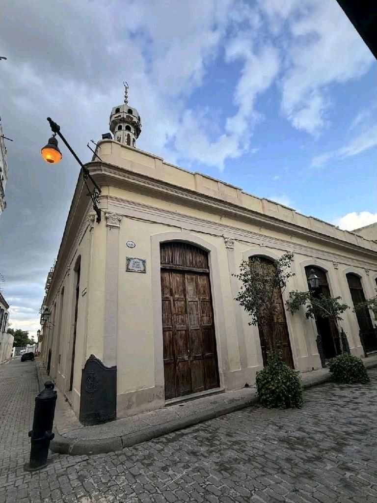
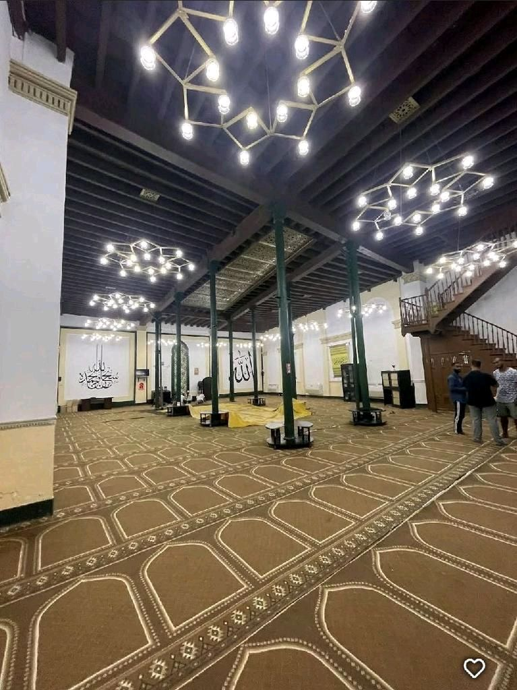
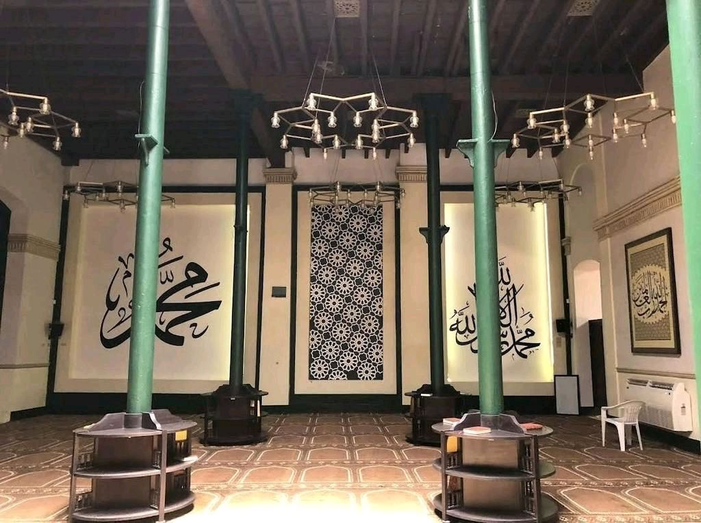
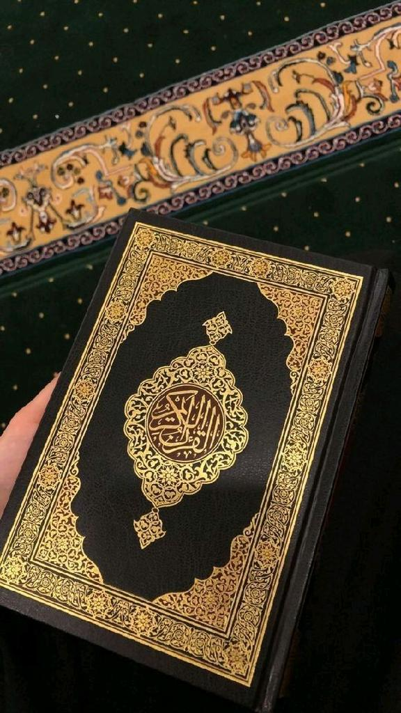
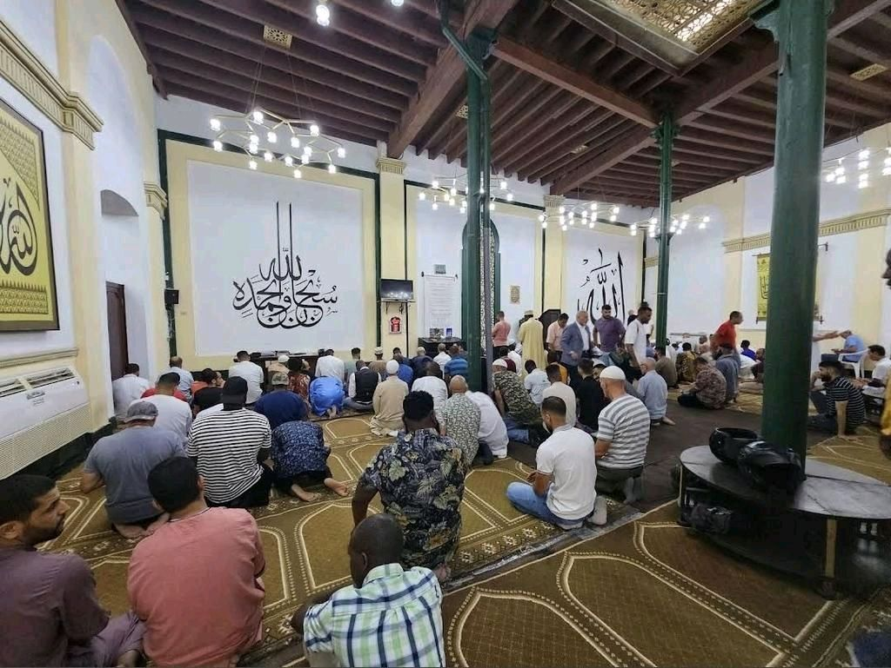

Entra, descubre, pregunta libremente. Sin compromiso, sin presión, solo con respeto y curiosidad.
Un espacio histórico y espiritual con más de un siglo de historia, ubicado en el corazón de la ciudad.


Explora cada rincón de la mezquita desde tu hogar. Descubre el minbar, el mihrab y el lugar de ablución con explicaciones interactivas.
Aquí no hay preguntas tontas. Respondemos con honestidad, sin juzgar, sin presionar.
No. El Corán dice: "Quien mate a una persona... es como si matara a toda la humanidad" (5:32). El Islam significa "paz" y promueve la convivencia. Los actos violentos no representan al Islam ni a los 1.900 millones de musulmanes en el mundo.
Es una elección personal de modestia y conexión espiritual. Muchas mujeres musulmanas lo describen como un símbolo de empoderamiento e identidad. No es una imposición universal en el Islam, sino una práctica que cada mujer decide libremente.
El Corán los llama "Gente del Libro" y los respeta profundamente. Jesús (Isa) y Moisés (Musa) son profetas muy queridos en el Islam. María (Maryam) tiene un capítulo entero del Corán dedicado a ella. Compartimos raíces abrahámicas.
¡Al contrario! La primera palabra revelada del Corán fue "Lee". El álgebra, la astronomía, la medicina moderna y muchas otras ciencias fueron desarrolladas por sabios musulmanes en la edad de oro islámica (siglos VIII-XIV).
La oración es una pausa espiritual en medio del ajetreo diario. Estudios demuestran que estos momentos reducen el estrés, mejoran la concentración y dan paz interior. Es como una meditación con conexión divina cinco veces al día.
¡Por supuesto que sí! Te recibiremos con los brazos abiertos, té árabe y dulces. Solo te pediremos quitarte los zapatos (como en cualquier hogar musulmán) y vestir de forma modesta. ¡Ven cuando quieras!
Nuestro imam responde personalmente en menos de 24 horas. 100% confidencial, 100% libre de juicio.
Preguntar al ImamUna introducción simple y honesta a una de las religiones más grandes del mundo.

El libro sagrado del Islam, revelado al Profeta Muhammad ﷺ hace más de 1.400 años. Disponible en más de 100 idiomas, sus enseñanzas hablan de paz, justicia, misericordia y conexión con lo divino.
La declaración de fe en un solo Dios y en Muhammad como su profeta.
Cinco oraciones diarias que conectan al creyente con Dios.
Caridad obligatoria del 2.5% para ayudar a los necesitados.
Ayuno durante el mes de Ramadán, desde el amanecer hasta el atardecer.
Peregrinación a La Meca al menos una vez en la vida, si es posible.
Personas reales, vidas reales. Conoce a tus vecinos musulmanes.

Más de 45 nacionalidades comparten este espacio de paz y reflexión.
"Como médico, encuentro en la oración el equilibrio que necesito en mi profesión. El Islam me enseñó a servir con compasión."
"Llevo el hijab por elección propia. Me siento empoderada, libre y conectada con mi identidad. Es mi decisión."
"Me convertí al Islam hace 5 años después de mucha búsqueda espiritual. Encontré paz, propósito y una comunidad que me acogió como familia."
Las puertas siempre están abiertas. Te recibiremos con té árabe, dulces y respuestas honestas.
Mezquita Abdullah
Centro Histórico
Lunes a Sábado: 10:00 - 18:00
Viernes: 15:00 - 18:00 (tras la oración)
Gratuitas - Reserva con 24h de antelación.
Disponibles para grupos, familias y escuelas.
Té árabe tradicional, dátiles, un libro de regalo y todas las respuestas que necesites.
Cualquier pregunta sobre el Islam, la mezquita o nuestra comunidad. Respondemos con respeto, honestidad y total confidencialidad.